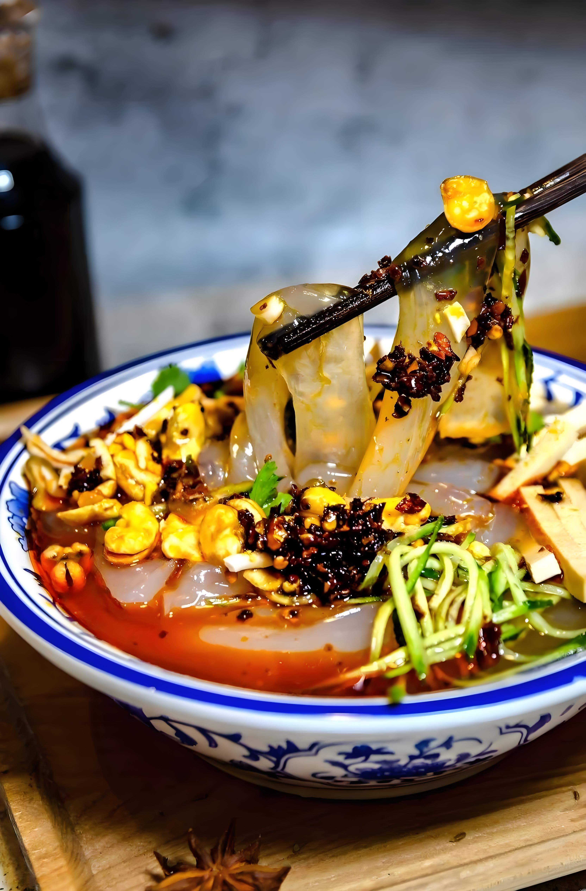
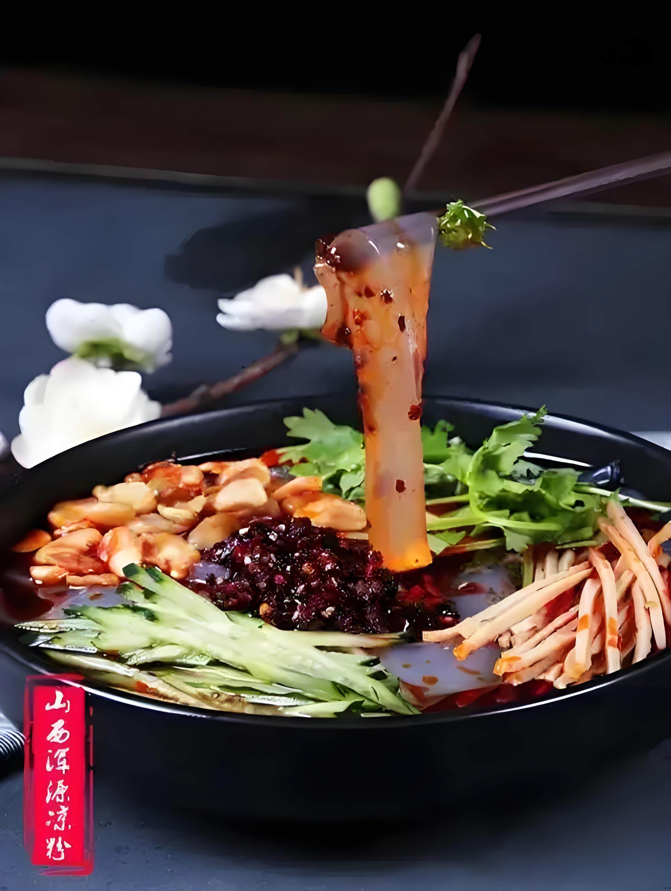
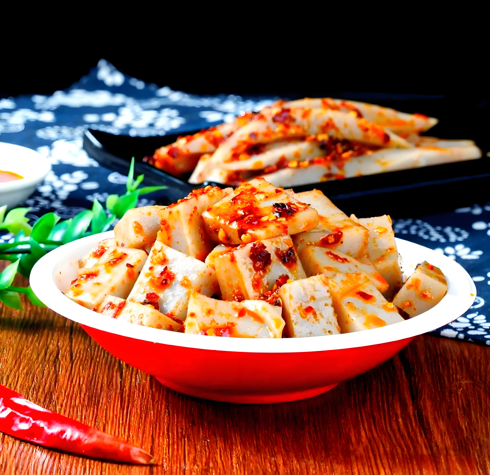
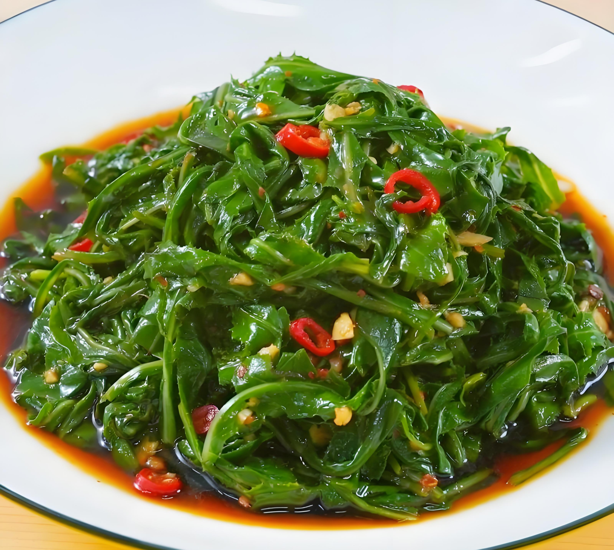

晋北地区消暑美食的千年传承与夏日风情

大同凉粉以土豆淀粉或绿豆淀粉为原料，经过传统工艺制作而成。成品晶莹剔透，口感爽滑筋道。搭配特制的辣椒油、香醋、蒜泥和黄瓜丝，酸辣开胃，是夏季街头最常见的小吃。
特色吃法：当地人喜欢将凉粉切成条状，加入腌制的胡萝卜丝和豆芽，再浇上秘制酱料，最后撒上一把香菜，色香味俱全。
"大同凉粉起源于明代，最初是矿工们的便携食品，后因其清凉解暑的特性，逐渐成为夏季街头巷尾的流行小吃。"

浑源凉粉以其独特的制作工艺和口感闻名，已被列入非物质文化遗产。选用优质豌豆淀粉，经过"七搅八晾"的传统工序制成，口感更加Q弹有韧性。
浑源凉粉的调料更为讲究，除了常规调料外，还会加入当地特产的莲花豆和豆腐干，最后浇上用十几种香料熬制的卤汁，味道层次丰富，回味悠长。
"浑源凉粉制作技艺传承已有300余年，'七搅八晾'工艺确保凉粉筋道不碎，2010年被列入山西省非物质文化遗产名录。"

荞麦碗托是晋北地区的特色创新小吃，将传统荞面与现代吃法相结合。荞面糊倒入碗中蒸制，冷却后形成碗状，故称"碗托"。
食用时，将碗托切成条状，加入黄瓜丝、胡萝卜丝、豆芽等配菜，浇上特制的芝麻酱和辣椒油，荞面的清香与调料的浓郁完美融合，既健康又美味。
"荞麦碗托源于山区农民的智慧，利用当地盛产的荞麦，创造出这种既方便携带又能饱腹的食品，现已发展成为具有地方特色的美食。"

苦菜是晋北地区常见的野菜，具有清热解毒的功效。凉拌苦菜是夏季最受欢迎的时令小菜，微苦回甘，清爽解腻。
传统做法是将新鲜苦菜焯水后过凉，挤干水分切段，加入蒜末、盐、醋和少许辣椒油拌匀。现代创新做法还会加入核桃仁或花生碎，增加口感和营养。
"凉拌苦菜在晋北地区有'春食苦，夏不苦'的民谚，体现了当地人'药食同源'的饮食智慧，是夏季餐桌上必不可少的养生小菜。"